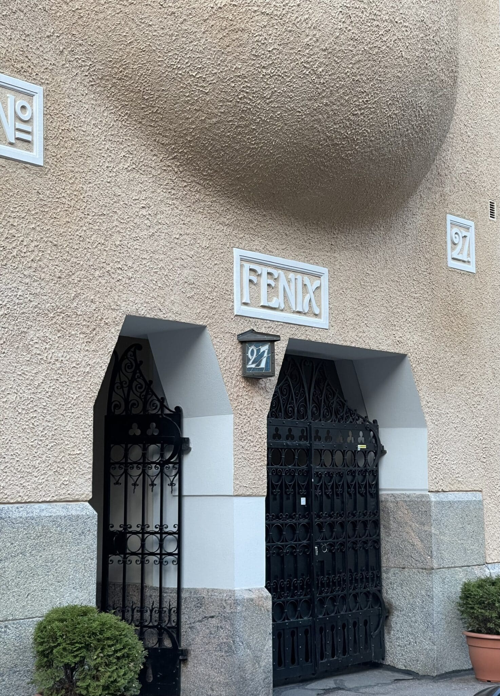
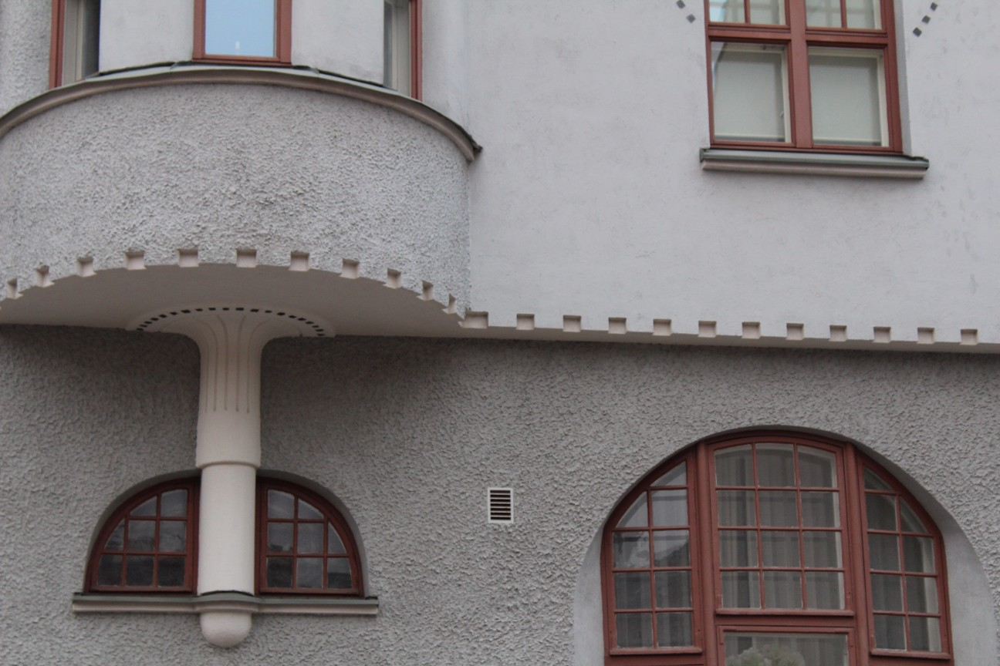
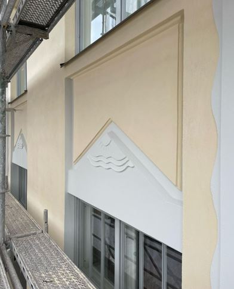
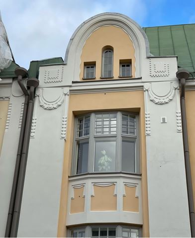

Galleri
Bilder från våra arbeten





Alla ornament från oss
Vi levererar gips-, betong- och gjutmetallornament för fasad- och inomhusrenoveringar. Ornamenten kan tillverkas från en modell, ett fotografi eller en ritning som kunden tillhandahåller. På önskan lossar vi de ornament som fungerar som modeller och monterar de nya på plats efter tillverkning.
Möjligheterna med gips för dekorering av inomhusmiljöer och fasader är näst intill gränslösa. Det kan enkelt imitera det gamla eller skapa något helt nytt. Vi levererar efter behov gipstaklister, dekorlister, golvlister, lampetter, rosetter, pelare, eldstäder och alla andra ornament.
Vi levererar även övriga dekorativa element som behövs i uppdragen, såsom betongkegelräcken, pelare, fontäner och blomkrukor samt gjutmetallräcken. Vi erbjuder allt som behövs för att skapa en imponerande helhet.




Vi har samlat erfarenhet inom renoveringsbyggnad under ett par decennier. Vår specialkompetens inkluderar terrazzoputs, rivputs samt gips- och betongornament.
Vi genomför renoveringsuppdrag heltäckande, från planering av arbeten till garantibesiktningar. Helheten byggs upp enligt kundens önskemål och behov.
Inom renoveringsbyggnad är ansvarsfull och tillförlitlig verksamhet central. Vi har under åren byggt upp kostnadseffektiva verksamhetsmodeller som är grunden för vår servicekvalitet.
Vår verksamhet är koncentrerad till större fasadrenoveringsuppdrag för fastigheter och bostadsbolag i Helsingforsregionen. Vi satsar på ett kvalitativt och långvarigt slutresultat.